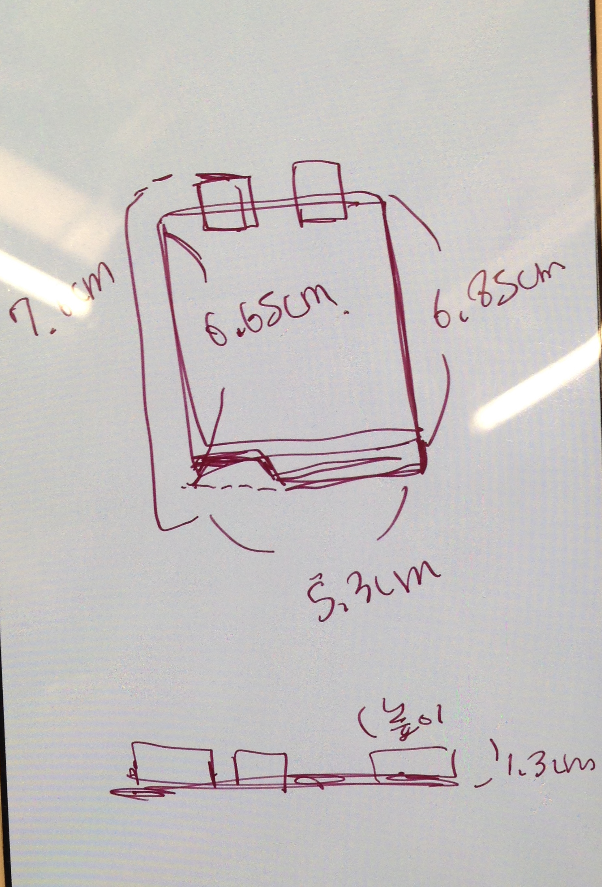

The task was to design an enclosure for an Arduino Uno.
First thing to do was to measure the dimensions of an Ardiuno Uno.

THen, I imagined how my UNO case would look like.
I thought about how the connecting part of the top and bottom would be before I started sketching.
To help with imagination, I sketched the model with dimensions I wanted on a piece of paper

Now, with my sketch on the paper, I actually started sketching on Autodesk Fusion 360.
I created a sketch for each of the top cover part and the bottom part.
I have created some holes on the bottom and also some grooves on both sides of the case to make it easier to open the case.
This is my final sketch.

As you can see, there are a lot of sketch dimentions because I wanted everything to stay in a perfect dimension.
The program eventually told me I had too many, but I'm not sure why having too many constraints will cause a problem.
Using my sketch, I extruded to make it 3-D.
I used a ruler to help me think of the actually size of the box.
And here it is, my final 3D model of Arduino UNO case in fusion 360!